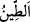

Bilen gönül ve temiz can Sen’dendir.
Allah Teâlâ, gıdalarına kolayca erişsinler diye hayvanların ve kuşların ayaklarını ve
boyunlarını uzun yarattı. Aksi halde hayatlarını sürdürmeleri mümkün olmazdı. Aynen
bunun gibi insanın her bir uzvunu da hayatını kolayca sürdürmeye uygun olacak şekilde
yarattı. Şu halde bütün mahlûkât, güzeldir. Şekilleri farklı olsa da, güzele ve daha
güzele ayrılsa da. Nitekim Allah Teâlâ: “Biz insanı en güzel bir kıvamda yarattık”
(et-Tîn, 95/4) buyrulmuştur.
Abdullah b. Abbâs (r.a.) şöyle demiştir: “Yaratılış bakımından insan da domuz da
güzeldir.”
Baklî der ki: “Çirkin imtihan yönünden çirkindir; Rahmân’ın emriyle yaratılmış
olması bakımından da güzeldir.”
Şeyh Yezdî (r.h.) ise şöyle demiştir: “Allah Teâlâ, güzeli de çirkini de yarattı. Fakat
çirkin, Allâh’ın ilminde çirkin olması murâd edilmiş olan şeydir. Çirkini, Allâh’ın
ilmindeki durumuna bakarak çirkin diye vasıflandırmak, en güzel ve en doğru olandır.
Çünkü iyilik ve güzellikler, çirkinliklerin varlığıyla ortaya çıkar ve güzellikleri
anlaşılır. Bu anlamda güzelliğin ortaya çıkması için çirkine ihtiyacının olduğu açıktır.
Öyleyse çirkini çirkin diye vasıflandırmak da güzeldir.”
Fakîr (Bursevî) der ki: “Allah Teâlâ’nın yapıp ettiği her şey güzel ise de, hiç
şüphesiz, güzeli de çirkini de O yaratmıştır. Allah mutlak olarak yaratma ile kendisini
medhetmiş ve şöyle buyurmuştur: “O halde, yaratan (Allah), yaratmayan (putlar) gibi
olur mu?” (en-Nahl, 16/17). Bununla birlikte medih makamında ‘Allah Teâlâ
maymunların, domuzların, yılanların, akreplerin ve benzeri zararlı ve zâhiren çirkin
görülen varlıkların yaratıcısıdır’ denilmez. Bilakis “O her şeyin yaratıcısıdır” (el-
En‘âm, 6/102) denir. Çirkinin çirkinliği, yaratılmasında ve var edilmesinde değil, onun
yapı ve karakterindedir. Gerçi çirkinin çirkinliği kendisi bakımından değil güzelin zıddı
olması bakımındandır. Merkebin hakîkati (ayn-ı sâbitesi), kâbiliyet ve istîdâd lisanıyla
şimdi bulunduğu şekli talep etmiştir. Kezâ köpek ve benzerleri, ayn-ı sâbitelerinin
gereğine göre sûretlerini/şekillerini taleb etmişlerdir. Kezâ köpeğin necis olduğuna
hükmetmek de onun zâtının gereğidir. Dünyâdaki her sûret ve sıfat, hakikatteki mertebesi
îtibariyle kemâldir. Her varlık kendi istîdâdının gerektirdiği bugünkü sûrette ve
Yaradan’ın kendisine giydirdiği sıfatta zuhûr etmeseydi, işte o zaman eksik ve çirkin
olurdu. Hâl böyle olunca Allâh’ın en güzel isimleri (esmâ-i hüsnâ) ile yarattığı varlıklar
arasında çirkin olan nerededir?
“Ve” bütün mahlûkât arasında “insanı” yâni beşeriyyetin atası olan Âdem (a.s.)’ı
“yaratmaya da çamurdan başlamıştır.”
“
” toprak ve suyun karışımıdır. Suyun kuvveti ondan gitse de yine böyle
isimlendirilmiştir.
Abdülazîz Nesefî (r.h.) der ki: “Allah Teâlâ insan bedenini topraktan yarattı, yâni